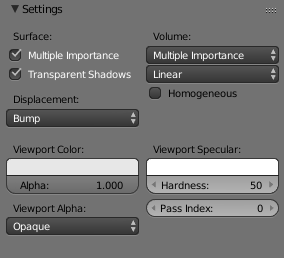

Material Settings¶

Material Settings.
Surface¶
- Multiple Importance Sample
By default objects with emitting materials use both direct and indirect light sampling methods, but in some cases it may lead to less noise overall to disable direct light sampling for some materials. This can be done by disabling the Multiple Importance Sample option. This is especially useful on large objects that emit little light compared to other light sources.
This option will only have an influence if the material contains an emission node; it will be automatically disabled otherwise.
- Transparent Shadows
- Use transparent shadows if it contains a Transparent BSDF, disabling will render faster but will not give accurate shadows.
Volume¶
- Sampling Method
- Options are Multiple Importance, Distance, or Equiangular. If you have got a pretty dense volume that is lit from far away then distance sampling is usually more efficient. If you have got a light inside or near the volume then equiangular sampling is better. If you have a combination of both, then the multiple importance sampling will be better.
- Interpolation
Controls the type of interpolation to use for smoke simulations.
- Linear
- Good smoothness and speed.
- Cubic
- Smoothed high quality interpolation, but slower.
- Homogeneous Volume
- Assume volume has the same density everywhere (not using any textures), for faster rendering. For example absorption in a glass object would typically not have any textures, and by knowing this we can avoid taking small steps to sample the volume shader.
Displacement¶
注解
These Options are only available if Experimental Feature Set is turned on.
- Displacement Method
Method used preform Displacement on materials.
- True Displacement
- Mesh vertices will be displaced before rendering, modifying the actual mesh. This gives the best quality results, if the mesh is finely subdivided. As a result, this method is also the most memory intensive.
- Bump Mapping
- When executing the surface shader, a modified surface normal is used instead of the true normal. This is a quick alternative to true displacement, but only an approximation. Surface silhouettes will not be accurate and there will be no self-shadowing of the displacement.
- Displacement + Bump
- Both methods can be combined, to do displacement on a coarser mesh, and use bump mapping for the final detail.
Viewport Settings¶
Viewport Color¶
- Color
- TODO.
- Alpha
- TODO.
Viewport Specular¶
- Color
- TODO.
- Hardness
- TODO.
Viewport Alpha¶
- Blend Mode
Blend modes for transparent faces.
- Opaque
- Render color of textured face as color.
- Add
- Render transparent and add color of face.
- Alpha Clip
- Use the image alpha values clipped with no blending (binary alpha).
- Alpha Blend
- Render polygon transparent, depending on alpha channel of the texture.
- Alpha Sort
- Sort faces for correct alpha drawing (slow, use Alpha Clip instead when possible).
- Alpha Anti-Aliasing
- Use texture alpha ad an anti-aliasing mask, requires multi-sample OpenGL display.
Pass Index¶
- Pass Index
- Index number for the Material Index render pass. This can be used to give a mask to a material and then be read with the ID Mask Node in the compositor.